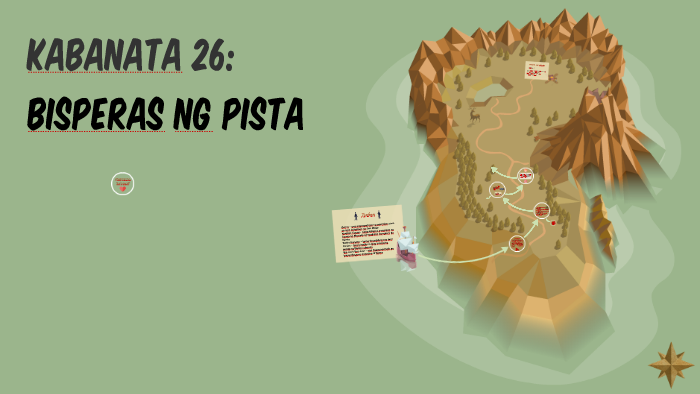
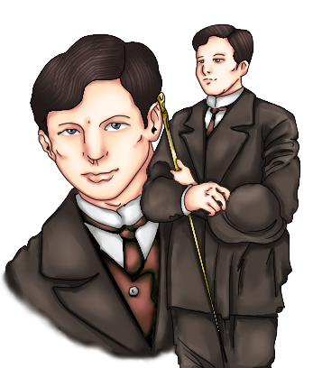

<html> 
    <head>
        <title> NOLI ME TANGERE: KABANTA 26</title>
        <link rel="stylesheet" href= "grid.css">
    </head>
</html>
 
<style>
    body {
        background-color: #b8936b;
    }
    h2 {
        background-color: #d7bfae;
    }

    p {
        background-color: #d3bfa6;
    }
</style>

<body>
    <h1> KAKABANATA 26: Ang Bisperas ng Pista </h1>
</body>

<div class= "container">
    <div class= "box">
        <h2> BUOD </h2>
        
        <p> Ika-10 ng Nobyembre ang bisperas ng pista sa bayan ng San Diego.  Naging masigla sa paghahanda 
            ang kilusan sa lahat ng dako. Ang mga bintana ng bahay ay napapalamutian ng iba’t-ibang dekorasyon. 
            May nagpapaputok ng kuwitis at may nagtutugtugan ng mga banda ng musiko. </p>
            
        <p> Ang mga masasayang lugar ng San Diego ay tinayuan ng arkong kawayan. Sa liwasang bayan naman 
            itinayo ang magandang tanghalan siyang pagdarausan ng komedya ng mga taga-Tundo. Batay sa mga balita, 
            si Padre Damaso ang magsesermon sa umaga at magiging bangkero naman pagdating ng gabi. </p>
            
        <p> Sa isang lugar naman na malapit sa bahay ni Ibarra, tinatapos ng mga trabahador ang katangang 
            semento na siyang pagtatayuan ng bahay paaralan.  Si Nol Juan, ang nangangasiwa sa mga manggagawa. Habang 
            abala ang mga manggagawa, ipinaliliwanag ni Juan ang kanilang itatayo ay isang malaking paaralan. Ang isang 
            panig ay para sa mga lalaki at ang ikalawa naman ay para sa mga babae. Ang paaralan ay magiging kauri ng mga 
            modernong paaralan sa Alemenya. </p>
            
        <p> Sa proyekto ni Ibarra ay naghandog ng tulong ang mga mayayaman samantalang ang kura ay humiling 
            na siya ang gawing padrino at magbabasbas sa paglalagay ng unang bato sa huling araw ng pista.  Sa mga pag-alok 
            ng pagtulong ay tumanggi si Ibarra sapagkat hindi naman simbahan ang kanyang ipinagagawa. Dahil dito, siya ay 
            hinangaan ng mga binata at nag-aaral sa Maynila. Samantala, ibinalita ng binata ang magandang takbo ng kaniyang 
            proyekto kay Pilosopo Tasyo, pinaalala naman ng matanda sa binata ang wika ni Balagtas, “Kung isalubong sa iyong 
            pagdating ay masayang mukha’t may pakitang-giliw, lalong pag-ingata’t kaaway na lihim, siyang isaisip na kakabakahin.” </p>
</div>
 
<div class= "box">
    <h2> REPLEKSYON </h2>
    <p> Ang aking mga natutunan sa kabanatang ito ay marami. Isa na rito ang pagiging matulungin sa kapwa.
        Kung may mga biyayang dumarating sa iyo at kung kaya mo namang tumulong ay tayo ay tumulong sapagkat wala namang masama 
        sa pagtulong. Natutunan ko rin na hindi lahat ng tulong ay kailangan mong tanggapin, mas maganda na ang tulong na iyong 
        tatanggapin ay makakabuti sa iyo o sa mga ginagawa mo. </p>
</div>

<div class= "box"> 
    <h2> PAGLALARAWAN SA ISANG KARAKTER </h2>
    
    <p><center> Crisostomo Ibarra </center></p>
    <p>Isa si Crisostomo sa mga paunahing tauhan sa Noli Me Tangere. Siya ay nag-iisang anak ni Don Rafael at 
        kababata at kasintahan ni Maria Clara. Siya ay nag-aral sa Europa nang pitong taon at bumalik sa Pilipinas matapos mamatay 
        ng ama upang ipagpatuloy ang plano nitong magpatayo ng paaralan para sa kabataan ng San Diego. Si Crisostomo ay magalang at 
        matalino. Tapat din siya sa kaniyang kasintahan na si Maria Clara dahil kahit na matagal silang nagkalayo ay hindi siya tumingin
        sa iba. Mahal na mahal din niya ang kaniyang pamilya at siya ay matulungin at maganda ang hangarin sa buhay. Siya ay hinahangaan 
        ng marami dahil siya ay mabait at matapang.</p>
</div>
    
